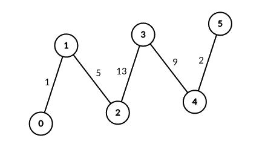
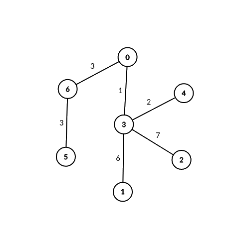

| Category | Difficulty | Likes | Dislikes |
|---|---|---|---|
| Algorithms | Medium | 233 | 28 |
thoughtspot | ubs
You are given an unrooted weighted tree with n vertices representing servers numbered from 0 to n - 1, an array edges where edges[i] = [ai, bi, weighti] represents a bidirectional edge between vertices ai and bi of weight weighti. You are also given an integer signalSpeed.
Two servers a and b are connectable through a server c if:
a < b, a != c and b != c.c to a is divisible by signalSpeed.c to b is divisible by signalSpeed.c to b and the path from c to a do not share any edges.Return an integer array count of length n where count[i] is the number of server pairs that are connectable through the server i.
Example 1:

Input: edges = [[0,1,1],[1,2,5],[2,3,13],[3,4,9],[4,5,2]], signalSpeed = 1
Output: [0,4,6,6,4,0]
Explanation: Since signalSpeed is 1, count[c] is equal to the number of pairs of paths that start at c and do not share any edges.
In the case of the given path graph, count[c] is equal to the number of servers to the left of c multiplied by the servers to the right of c.Example 2:

Input: edges = [[0,6,3],[6,5,3],[0,3,1],[3,2,7],[3,1,6],[3,4,2]], signalSpeed = 3
Output: [2,0,0,0,0,0,2]
Explanation: Through server 0, there are 2 pairs of connectable servers: (4, 5) and (4, 6).
Through server 6, there are 2 pairs of connectable servers: (4, 5) and (0, 5).
It can be shown that no two servers are connectable through servers other than 0 and 6.
Constraints:
2 <= n <= 1000edges.length == n - 1edges[i].length == 30 <= ai, bi < nedges[i] = [ai, bi, weighti]1 <= weighti <= 1061 <= signalSpeed <= 106edges represents a valid tree.